WaSender
Created:- 18 Jan 2022
Company:- TrendingApps
Contact:- Contact Author
Thank you for purchasing the app. If you have any questions that are beyond the scope of this help file, please feel free to Write us Support Message Contact Author. Thanks so much!
Follow our WhatsApp channel for Updates, Announcements https://whatsapp.com/channel/0029Va81vTc8F2pMLSIiM21s
Prerequisite
1) Download .Net Framework 4.6.1 runtime setup from Bellow url (Ignore if already installed)
https://dotnet.microsoft.com/en-us/download/dotnet-framework/net461
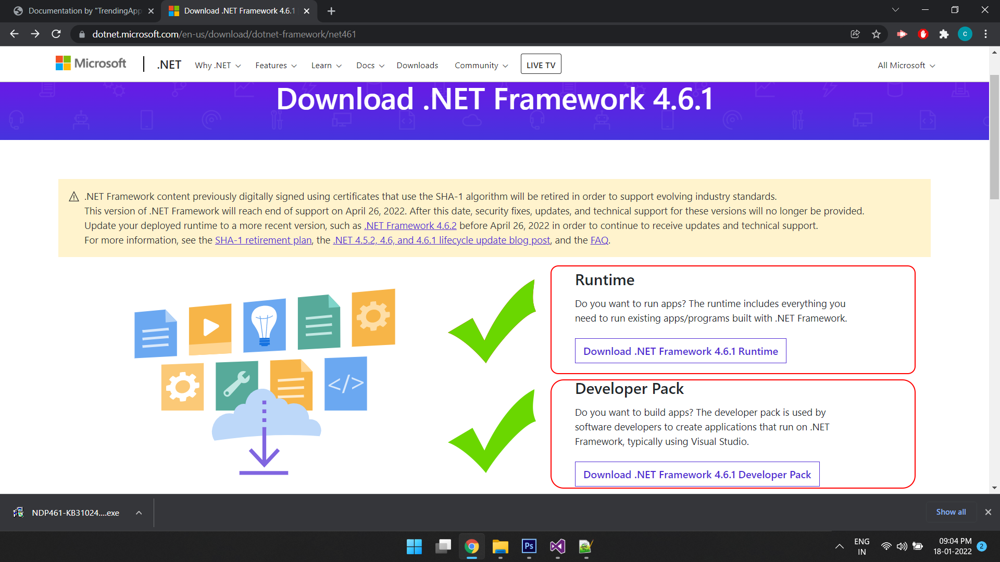
2) Download and Install Google Chrome (Ignore if already installed)
https://developer.microsoft.com/en-us/microsoft-edge/webview2/?form=MA13LH
Importent Antiban Points Before you use this software .
- Try to use virtual numbers for bulk sending
👉https://temp-number.org/app/
👉https://www.smspool.net/ - Follow all antiban settings described in userdoc file in documentations folder
- If you account banned
in settings ( button on top right corner ⚒️)
CLEAR PROFILE CACHE
Every time whenever you get blocked - if your WhatsApp account banned Then try after 3 months If you are using new account Then don't use it with software immediately Make spend some time manually with your account, join some groups and do some activities Try to clear your whatsapp local cache and data before adding new number in it
- Register for a new whatsapp account (Virtual Numbers ) on my mobile . Leave it on your mobile for 7 Days without doing anything.
- Come back to your whatsapp account on your Mobile and join manually some whatsapp group and talk with groups members for next 7 days daily at least 1 hour
- Then use WhatsApp warmer for next 7 days daily 1 hour
- After 1 month your number will be strong
- After that , start from 10 messages per day and increase by 10 daily
- while doing this, Purchase new virtual numbers and prepare them same way from Step 1) for your new numbers
- consider that your number will ban any time , may be after sending 50 messages or after sending 1500 messages, its all up to your message and you are spamming or not
How to Run WaSender Software?
- Go to 'AppHere' Folder and find 'Setup.exe' Install the SetUp
- After SetUp Installetion, Find 'WaSender' on your Desktop
Activate WaSender Software?
- After Successful installetion, when you first time open WaSender Software, it will ask you sor Activation Like bello image
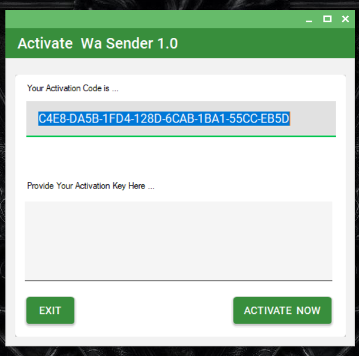 - To Activate WaSender , Copy The "Activation CODE" from this window
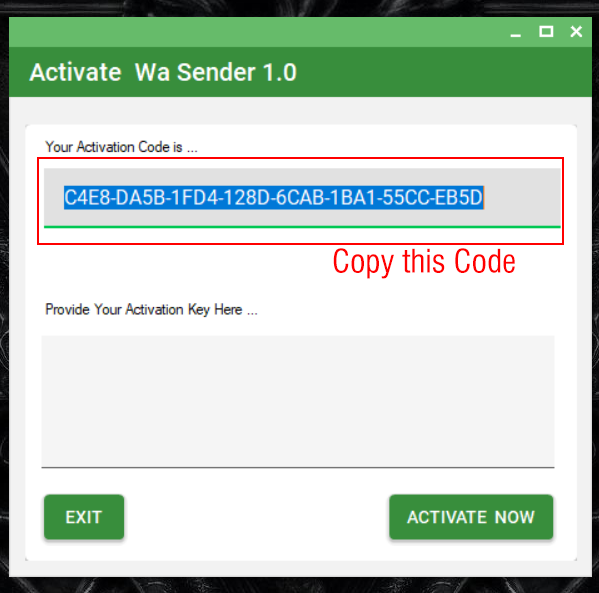 -
Now, from your Apps Downloaded folder (which you downloaded from COdeCanyon), find 'KeyGen' folder , Open this folder
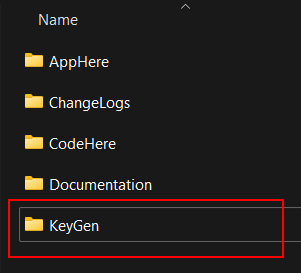 -
Under this folder, find 'KeyGen.exe' file with logo of keys, Double Click on it
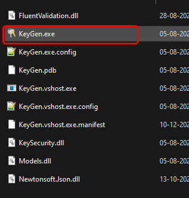 - First it You Need to provide PURCHASE CODE 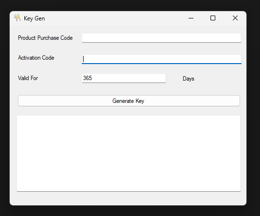
-
Where can you get your Purcchase Code ?
- Log in your codecanyon.net acount (https://codecanyon.net/)
- Go to your downloads section ( https://codecanyon.net/downloads )
-
Find WaSender Product and Download "License certificate & purchase code (text)"

- Open text file 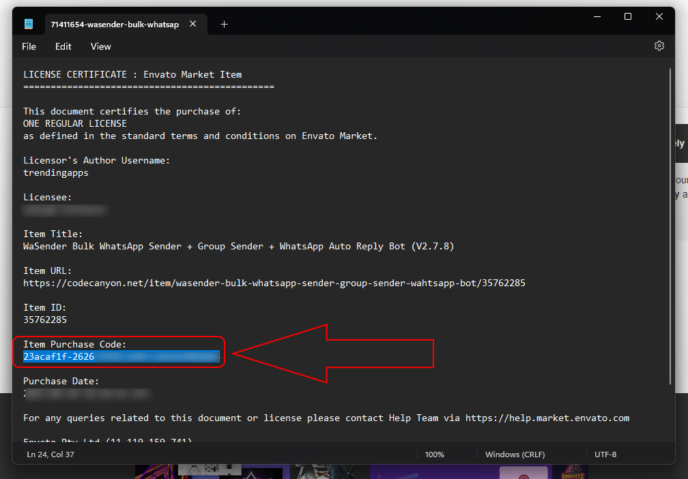 Here Is Your Purchase Code
- Copy it And Provide it Into Keygen 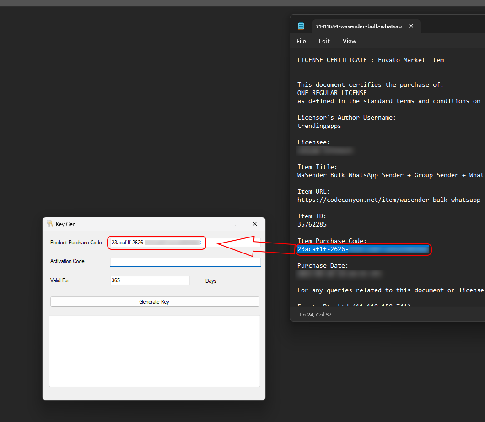
-
Now Provide Activation Code Of Your Client (Or you) which Popup up in Activation Window of WaSender
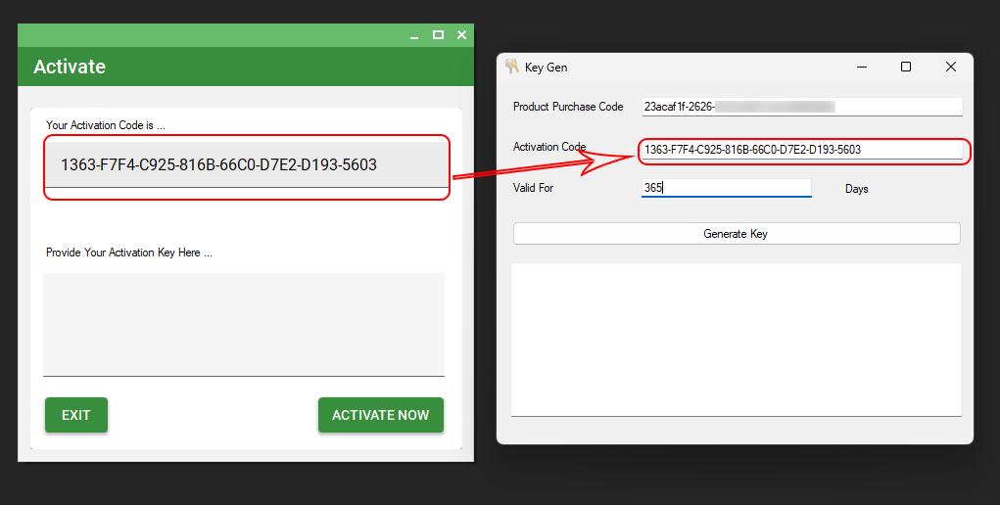
The Click on "Generate Key" Button, It will gererate Activation KEY for WaSender Software. -
Now , Copy Generated Key, and Paste it into WaSender's Activation process dialog's 'Activation Key' Section
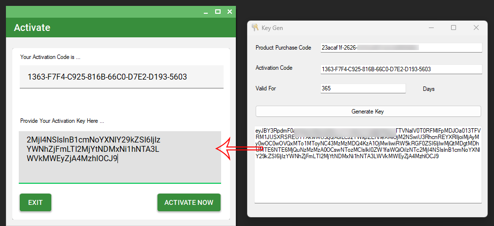
- Finally , Click On 'Activate Now' Button.
- Video Tutorial of How to Activate
How to resale it? How reseller rights works
You need to send setup file from
"SetUp" folder under the "AppHere" Folder
To your customers
One your client install software, Software will ask for activation.
Software will generate unique ‘KeyCode’,
You as a Software owner, you can provide them ‘Activation Code’ (with date validity)
How to Run Single(Contact) Sender?
-
Download excel template
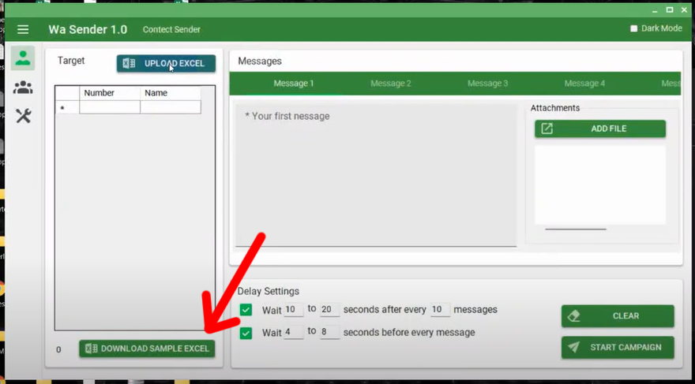 -
Prepare Your excel with Targeted mobile number (without + sign & with country code) and Save it.
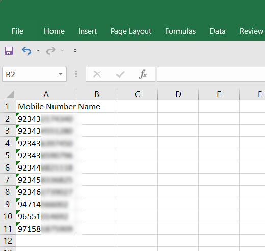 -
Upload Saved Excel file

-
Type your Message here Then click on START CAMPAIGN

-
Enter any Name for your CAMPAIGN and click OK

-
Click on 'Click to initiate' Button

-
web whatsapp will open in Chrome Browser, Scan QR code from you mobile phone and wait

-
Once the status becomes 'Initialised', Click On 'Start' Button

- Now the status of you campaign becames 'Running' and WaSender will send your message to targeted mobile numbers one by one Autometicaly 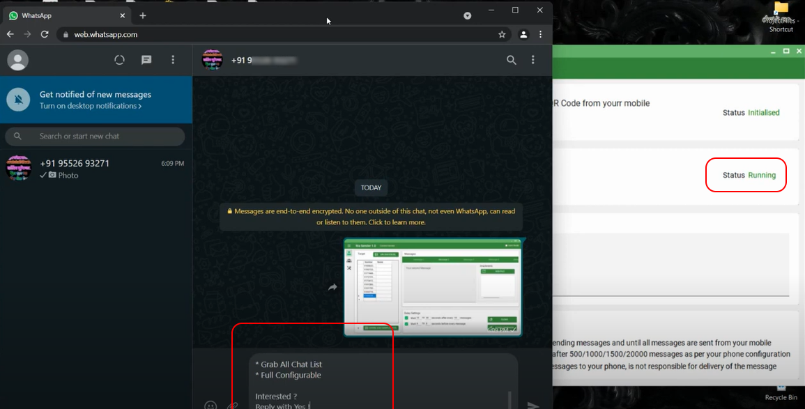
- You can tarack a log and progress 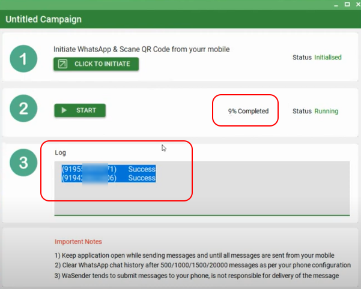
-
After Finishing the task you will get Status Report of your campaign

How to Use Multi Account feature
How to Rotate Messages ?
How to use WhatsApp warmer ?
How to Send Audio Recording ?
How to Use Bulk Website Email Mobile Scrapper ?
How to Add KeyMarkers and Random
Keymaker means bunch or similar words Like , hi, hey, hello, howdy etc. If you provide keymakers , system will take any one of them randomly everytime . This is part of antibban settings
Random is system will generates automatically any random number and include it in your main mess to each contact Again this is also part of antibban setting
How to Add Caption on image / attachment
-
First Select any file / image or video
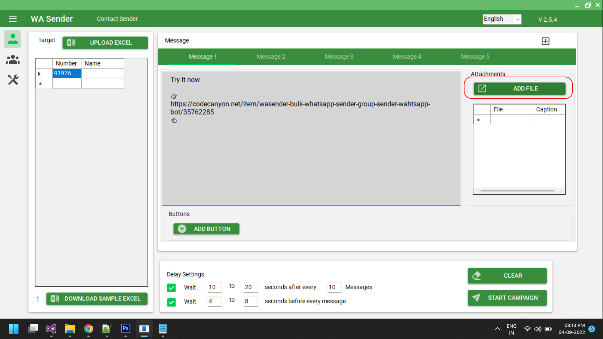 -
After adding file , Select a file from List and the right click
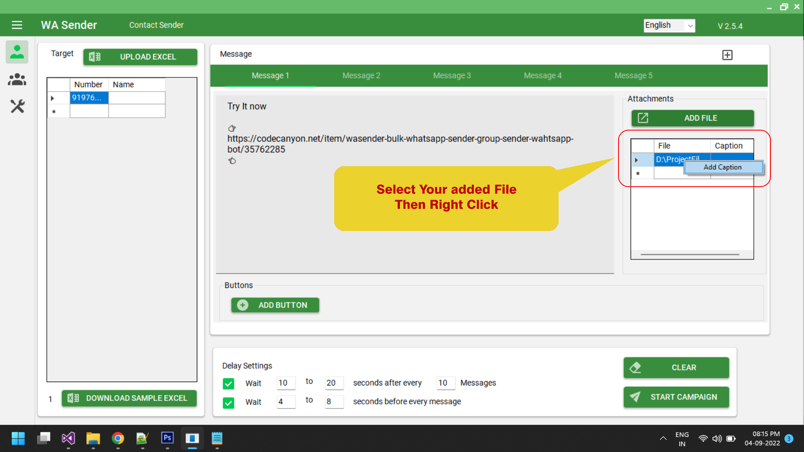 - Hit 'Add Caption' Button
-
New Multiline Input Box will Open

-
You can Add Your Caption with emojies and symbals

-
Your Caption will appeare here

-
Run the Campaign

-
It look like this

How to Send Call to Action Buttons?
Disclaimer :
1) Call-to-Action buttons may stop working at any time in the future; TrendingApps has no control over this feature.
2) This feature is still in development, so you might face issues such as the first chat not receiving buttons, etc.
How to Send Message to Groups?
Grab WhatsApp Group Links from Web
Auto Reply Bot
-
How to configure AutoReply Bot
-
Running AutoReply Bot
-
How to use Polls in BOT ?
How to check software internal updates
Internal updates meanse , if you facing issue issue because of CHrome driver update and web whatsapp update. after purchasing this software, you dont need to uninstall software and re-install new version of this softwarefirst thing you need to do is 'check software internal updates'.
How to resolve Chrome Driver error (Windows 10 and above)
1) TRy this2) Above solution is not working , then try to update chrome driver manually
For Windows 7 and 8 follow bellow video tutorial
How to Send 'Dynamic Parameterised Message'
- You can Send Dynamic, Parameterised Messages with very easy options
-
First, Download sample excel file from WaSender
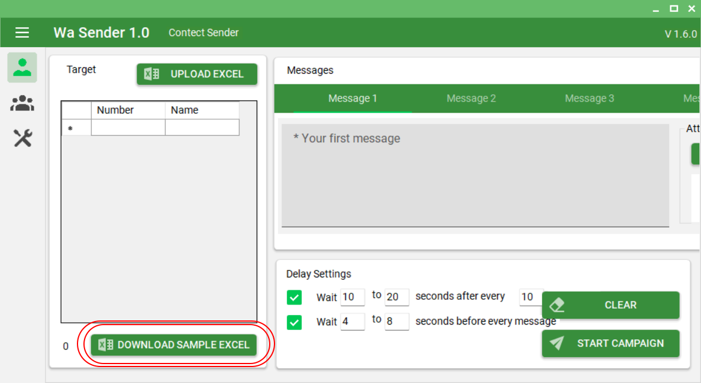 -
In this sheet, As we normally enter mobile numbers, add MObile Numbers with country code, then add Name if any,
Now here is the key point, Add some extra columns as per your message requirment. The Example is shown in below image
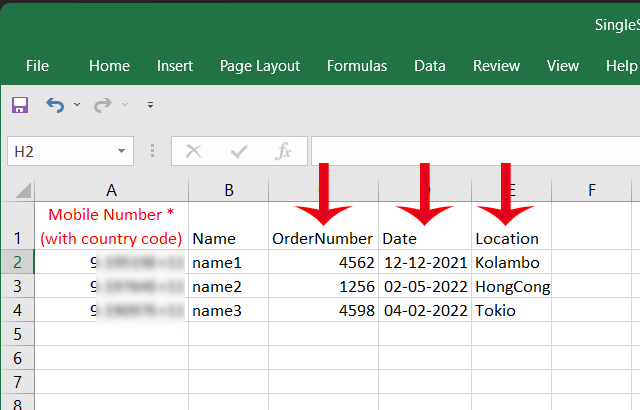 -
Now Save the file, And Back to WaSender, Hit 'UPLOAD EXCEL' button, and choose recently updated excel sheet.
Extra aded columns will added with values, as per excel sheet

-
Now in the message field, You can use Columns Headers with {{}} as parameter ,
for example, if you want to use 'Name' use {{Name}} (Without Space / Case Sencitive)

-
Now run the campaign Normally. Result will be like
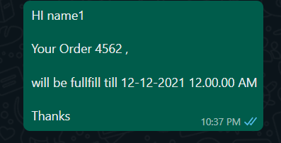
Grab (Scrap) Contact List
Send Message to Contact List
Use WhatsApp Number filter
Use WhatsApp Business Profile Extractor
Grab Active Members from WhatsApp group
How to Use Google Map Data Extractor
How to Add Group Members
Note : Acording to recent update - Beofore adding bulk members to group, You need to save all contacts into your contact list
Then refresh your contact list in WhatsApp
Then add same members in group .
For that you can use our Google contacts CSV generator
Import all numbers in this tool , then generate one CSV file
Import that CSV file in your contact.google.com account
Then sync that contacts in your device WhatsApp
Once all number added into your contacts then
Import same number in group member adder tool
Note: group member adder is risky to use, use this tool only if you don't care about banning
How to Use Group Finder
How to Use Group Generator
How to Use 'Get Poll Results'
Try to send messages with Poll and get result from same system and same browser.
This feature will work efficiently, If you send messages with polls Using Same Bulk Sender Software (WaSender) with Same Profile/Browser and same system.
If you send message from someware else system or browser and trying to get Poll Results from any other system/Browser then the result can be something diffrent,
because in web browser not all chats are loaded so that , all Poll replies by the users can't get.
Also , Result can be unexpected if Poll Messages was too old.
How to Use 'Social Media Data Extractor'
Please Note : While grabbing data google can ask you for CAPTCHA. when it cames, System will inform you will Playing two times Beep sound. You need to solve the CAPTCHA, then system will continew with Data Grabbing
How to Extract Community members and send message to them
Please Note :This feature is based on the loopholes of the WhatsApp algorithm. If WhatsApp realizes this in the future, it can stop working at any time
How to Schedule a Campaign
How to Invite Members In Group
Please Note :This tool is very risky , use this tool only if you don't care of Banning your WhatsApp account
How to use NAME variable in message and Bot
[NAME] variable inserts a user's name into a message automatically while sending messages. You can use this built-in variable exactly the same as [NAME]. Do not translate this variable into any other language.
Important Note : this variable only works for those numbers who are already connected with you before and those who are already present in your chat list. Otherwise, instead of NAME It will replace this variable with user's number.
How to use SPOILER variable in Message
[SPOILER] this variable Send WhatsApp messages with spoiler tags!.
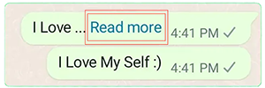
Important Note : this variable only works for those numbers who are already connected with you before and those who are already present in your chat list. Otherwise, instead of NAME It will replace this variable with user's number.
Useful Tips
-
Q . How many messages with an image could be sent per minute?
Answer : It Depends on to how many contact you are targeting. Its advisable to increase delay setting as per your contact vastness. Current default delay settings are enough for almost 200 contacts . It takes random delay from the configuration which you provide You can say if you targeting for 200 contacts, it can send 5 to 10 message per minutes
-
Q . How many WhatsApp messages can I send per day? Will my number be blocked if I sent too many WhatsApp messages?
Answer : The number of messages you can send depends on how old your WhatsApp account is. If you have a new number, start by sending a small number of messages like 50 per day. Gradually increase it by around 5-10% every day and within a month you can reach up to 3000-4000 messages. WhatsApp will ban your number if you send too many spam messages. This happens if a large number of people report you as spam. So always ensure that you don’t spend spam especially from a new number.
-
Q . What are Anti-Block settings?
Answer : WaSender has a list of settings that can help to send a large number of messages without getting your account blocked.
1: With WaSender , you can send multiple variants of messages in single time. For example, if you are sending messages to 1000+ numbers, you can create around 5 different variants of messages so that your messages remain different.
2: WaSender allows you to import files with variables that can help you to even further distinguish each of your messages. For example, you can import a file with a name & number and use the name to make each message unique.
3: We provide settings like the time between messages and other advanced settings that prevent your account from getting blocked. -
Anti Ban tips
1)We suggest to not use your main personal account (you can use a new account number)
2)Just try to use your new account for few days sending and receiving and after sending bulk from it
3)Send account number (that you want use it to send bulk) as vcard from your personal account with friends and family ask them to save it and to message you on it
4)When you start send bulk from new account start with small bulks
5)Join Open WhatsApp Groups and make some conversation their
6)Try to write message in a way that recipient do not report it as spam (this is the most critical issue with new accounts)
7)Try to use Multi Message and/or Spintax options on the application, which allow you to write same message in different way
8)Add your numbers and your friends number that you usually chat with them and set initiate dialog with them after x amount of messages
9)Give your account more credibility by joining groups
10)Do not send more than 600 messages per hour. Bulk Whatsapp Sender has a unique capping option where you can tell Bulk Whatsapp Sender when to stop sending messages.
11)Send messages only to opt-in users
12) Use randoms and key markers
13) Try to use virtual numbers for bulk sending (sms-man.com)
14) If you account banned
Go to
C:\programdata\wasender
And delete chromeprofile folder
Every time
Rating
If you like our app, we will highly appreciate if you can provide us a rating of 5. You can rate us from your Codecanyon Menu > Download page.
Credits
Once again, thank you so much for purchasing this app. As I said at the beginning, I'd be glad to help you if you have any questions relating to this app. No guarantees, but I'll do my best to assist. If you have a more general question relating to the apps on Codecanyon, you might consider visiting the "FAQ / Support" section and asking your question in the "Comments" section at Codecanyon app detail page.
TrendingApps